The Stand at Klamath Falls
Report Number Eight - Farmers BREACH headgate compound
By: Jeff Head, August 29, 2001
[with photos and narrative by Sean Finnegan]
Early this morning I wrote a speech to be delivered at the headgates in Klamath Falls at the 4 PM meeting. I was concerned about my many friends there and for their welfare as they continue to fight for their rights, their livelihood and their way of life. Today's meeting would be pivotal. A number of the local people had done extenisive research and had proof positive regarding something all of us who are involved already know in our hearts to be true. Due to the provisions of the Reclamation Act that built the Klamath Project, the irrigation gates now being guarded by armed federal officers belong to the farmers. That information would be presented to as large a gathering of farmers at the headgates. If God was willing (and it later proved He was) they were also planning to present it to the Federal officers on their side of the fence.
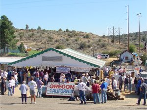
The meeting was also critical in other ways. Through my discussions with the organizers, it was apparent that the local Sheriff, Tim Evinger, and the local commissioners, would be watching the event. So far, a relative hand full of farmers themselves had actually taken direct action, probably numbered in the dozens. Despite the fact that 1300 had recently (within the last week) signed a petition requesting that the Sheriff protect their rights to the water and take action ... the Sheriff and others were waiting to see what kinf of commitment those other farmers had before he took the step to directly confront the Federal government himself. Were the farmers themselves willing to stand up and do something for their own water ... were more than just a few willing to do this? We found out later that afternoon that they were.
I could not attend personally, though I longed with all my heart to be there. Short of an actual physical confrontation (which was certainly possible) I had promised my dear wife that I would vouchsafe our own livelihood that supports our family of seven. I had already put significant stress on that livelihood and could only afford to risk more if things turned much worse. I knew that the folks there had plenty of help, and I prayed that the farmers themselves would show up in numbers this day. So, I continued on the phone throughout the day whenever I could get a moment from work. I sent my speech and asked that one of the local people, Bill Oeddings, Jim Palmer, Barron, Gaylord, or someone read it in my behalf. They said someone would.
As the reports began coming in on FreeRepublic.com from people who were there, and as I talked to JJ Johnson at SierraTimes.com ... my heart began to swell. The speeches being given were full of patriotism and a direct challenge to the reprehensible and tyrannical actions that had been perpetrated on these good people. The numbers were growing ... first a couple of hundred, then closing in on a thosuand at the headgates. When the first reports came of people crossing the fence, my wife and myself knelt next to our bed and offered up a sincere and heartfelt prayer to God in Heaven on their behalf that they would be watched over, that they would make progress in retaining their rights and that if it was God's will, peace might be maintained, but not at the cost of essential liberty. I will let the eyewitness account of Sean Finnegan, a patriotic young man from Maryland who had answered the call and driven out to Klamath from Maryland twelve days before, tell the tale of what happened there:
ACCOUNT BY SEAN FINNEGAN
The meeting began promptly at 4pm and estimates of the crowd range from 500 to 700 irrigators (farmers and ranchers) assembled to hear the proof organizers said they had of ownership. Barbara Martin went through extensive research and legal material she and others had gathered and presented a compelling case. She passed the information to each one of them and when she was done she asked them if they thought it was their land. And the crowd answered, "Yes!" And when she asked them what they wanted to do with their land they answered, "Take it back!"
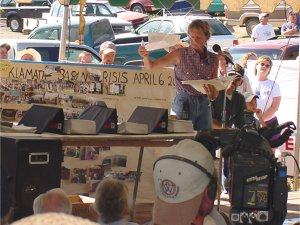
After she spoke, Robert Herd, former sheriff for Tehama County, CA. got up and spoke on his experience as a county sheriff who had thrown out federal agents of the ATF, IRS, and EPA who had come in to his county to shake down and otherwise harass his constituency. None of the agencies mentioned had bothered to sign a "Memorandum of Understanding" (MOU) with him when they entered his county. An MOU is a document which is supported by a federal law (written by Helen Chenoweth) which says that federal agents must state their purpose with the sheriff before conducting business in the sheriff's county. In the case of the IRS agents, sheriff Herd arrested them and confiscated their weapons. Eventually the Attorney General had them released. They decided to donate their weapons to him rather than face ridicule in the press.
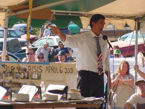
Richard Mack, former sheriff in Arizona, spoke next and he made an emotional plea for freedom to the crowd. He led them through the history of "peace officers" and their roles in their communities to the present state where "law enforcement officers" enforce laws while trampling on the rights of the citizens they are paid to protect. He read from the Constitution and even spoke from the Preamble of the Declaration of Independence in the form of a prayer. As he spoke, he punctuated his words with gestures at the federal officers on the other side of the fence and repeatedly referred to them as redcoats. At the end of his speech he had the crowd on its feet.
Following sheriff Mack, a local rancher, Jim Palmer read a statement by Jeff Head, a Real American I know and admire from Emmett, Idaho, who has spent considerable time at the headgates. Jeff's words,spoken by Jim reinforced the support of the people of this country who have been drawn to the basin to see freedom preserved at any cost. The words rang true, not only for Klamath, but also for the country. It was time to wake up and make a stand.
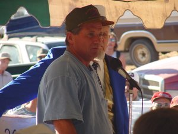
The last man to speak was Joe Bair, one of the original men to take the headgates, and a man who has stood at the headgates for over 51 days. Having spent time with him, I know him to be a man of commitment and integrity and I know that he wanted the irrigators to make a decision for themselves for once. So when he spoke his message was simple, "It's up to you to decide what to do today. Make your peace in your hearts and make your decision. I can't do it for you anymore."
After Joe spoke a few more people tried to talk the crowd out of doing anything foolish but they were heckled and eventually they left the stage. Barbara Martin told them to decide what they wanted to do and if they felt it was time to take back their land that they could get in line at a gate in the fence and follow a young man who was about to deliver the proof of ownership documents and demand the Feds vacate the property. In a unanimous display of strength and community, the farmers and ranchers stood and gathered at the fence that kept them from their water.
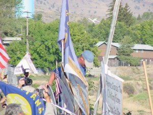
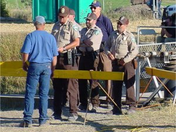
At this point, Barron, one of the younger farmers who had been very involved with all of the confrontations at the headgates, and an individual I have grown to respect greatly, and one of the individual deeply involved with the creation of the first bypass to the headgates on July 15th, walked to the fence and calmy crossed over. I cannot tell you how proud I am of him. His friend Danny and another farmer who has been involved from the beginning (both of whom are pictured in the July 13th photo of farmers opening the headgates) crossed over right behind him. These two men opened the floodgates. Back to Sean's narrative.
Not moments after that, others were behind him. Slowly but steadily they went over the fence. Old, young, Indian, farmer, rancher, townspeople, and even the press faced the awesome power of the federal government and took back their ground. Federal agents retreated to the narrow walkway of the headgates and formed a gauntlet to prevent people from entering the gate area and attempt to make another "unauthorized release" of life giving lake water in to the canal.
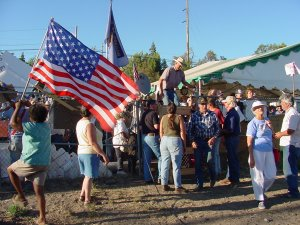
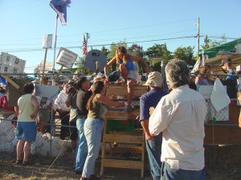
The numbers began to swell and as they did songs were sung and tears were shed as people embraced and shared a moment they had wanted for many months. They were on the brink of taking back their water and the stewardship for their land that they had shared for over a century with all the fish and wildlife they cared for as much as their crops. It was a joyous celebration of freedom, seldom seen and felt in a country where people who call themselves environmentalists hide behind laws which deprive the animals they seek to protect of the resources needed for life and steal the land from the people who know more about living in harmony with nature than any pencil pusher from Eugene or Portland ever would living in a condo and breathing manufactured air.
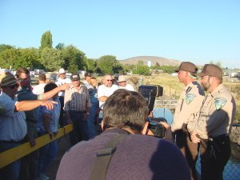
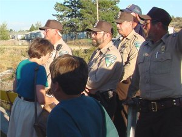
People waited patiently to climb the ladder and, as the number grew, some started to make camp as they knew they would be in for another long haul. Meanwhile the gauntlet of federal officers tightened their ranks and were peppered with comments and questions. No one was disrespectful to them and they were invited several times to go home. They never spoke and stood fast guarding a smaller area than they had occupied moments before.
A line was created between the rangers and the people by police barricades and some penetrated it and continued to ask them questions. One woman even took down every one of their names and badge numbers. They never once said a word. They just stood there stone faced and emotionless.
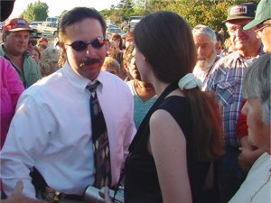
Finally after some time, sheriff Tim Evinger arrived amid cheers and fanfare and entered the headgate area, thus violating federal law, and began to make his way through the crowd. He ended up face to face with the federal officers and exchanged words with them. He was asked repeatedly by the people if he was going to throw the feds out and he responded by saying the he would need a court order to do so and when he received it he would act. He was surrounded by his supporters and questioned and embraced by the farmers and ranchers who had asked him to make the stand with them. Moments after he requested the court order cell phones were buzzing to judges in the area. Time will tell if the court order arrives.
A table and chairs were brought over the fence and eventually dinner was served as it always is at the headgates albeit this time a little closer to the water. Hotdogs and beans. While the meal was being served signs of a shifting of "Camp Headgate" from the parking lot to the area beyond the fence could be seen. And one bit of irony was observed as I noticed that the farmers had taken the gate. The gate in the fence was gone from it's hinges and in it's place was an empty space that the people of Klamath Falls passed through from their community to their land and their water.
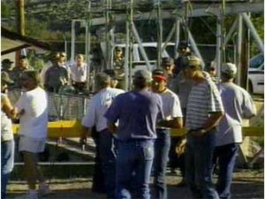
And as I watched the sunset at the headgates I was reminded of the words of Charlton Heston as said by Helen Chenoweth-Hage at Freedom Day, "I wish for you the courage to be unpopular. Popularity is history's pocket change. And courage is history's true currency." I saw a lot of courage in Klamath Falls today. And I'm proud that I was there to see it expressed by farmers and ranchers in a small town in Oregon without water. For now.
I spoke with Danny and others after the move had been made. Sheriff Evinger requested that the BLM officers leave. They indicated to him that it would take a court order for that to occur. As Sean indicates above, the people requested repeatedly that he get the court order. Apparently, Sheriff Evinger has indicated he will seek to obtain such an order from a local Judge. It will be based on the claims of ownership by the people, it will based on the denial of water rights by the government, it will be based on the threat to body and livelihood the federal agents represenmt as long as they are there ... and it will be based on what is right and what the constitutional duty of the Sheriff and any other law enforcement officer is ... to bear ture faith and allegiance to the Constitution, to defend the Constitution from all all enemies foreign and domestic and to protect the life and liberty of the citizens of this nation. ... And ... IT IS ABOUT TIME!
God bless the people there. God bless there efforts to retain and vouchsafe their God-given liberties as AAmerican citizens. I am proud and humbled to be involved with and associated with such patriots.
FULL TEXT - Jeff Head's Speech At the Head Gates - August 29, 2001
LET THE WATER FLOW
By: Jeff Head
August 29, 2001
To be delivered at the head gates of A Canal
Klamath Falls, OR
I am grateful for the opportunity to have this speech read to you here at the head gates today. I only wish to God that I could be there amongst you, a group of people I am proud to be acquainted with, and I have been humbled to be involved with in an epic and critical struggle for liberty and the traditional American way of life. … and make no mistake, that is EXACTLY what this struggle is all about. About whether free, independent, law abiding American citizens will be able to enjoy their rights as citizens of this great Republic … their right to choose their own livelihood, to have their property and other legal, contractual rights honored and to enjoy the fruits of the work of their own hands. That’s the fight on the one hand … the hand you good folks represent. The other hand is whether or not agenda driven socialists and yes, Marxist, ideologs will be able to continue their influence over our governmental agencies and destroy those rights at their discretion … about whether in the name of some “collective” good of their choosing and definition, frivolous and insulting reasons can be forwarded to destroy the free rights and liberties of the citizens of this basin … and by extension of any other basin or valley in this nation.
That my friends is the true nature of this struggle.
I will try and be as brief as I possibly can.
Many of you here know me. I was raised on a small ranch in North Central Texas and have been close to agriculture throughout my life by choice, preferring with my wife to raise our five children in the smaller towns where the people were still connected to the land and where the simple truths of reaping what you sow is a way of life.
I came here to the head gates on July 13th when I heard that the water had been turned on by a relative hand full of committed and courageous individuals who intended to claim their rights in spite of a reprehensible court ruling and its implementation by the current administration. I arrived late in the night to join those folks and I was here the next morning when armed federal officers, supported by your own local law enforcement, took the gates back. I was here the following day when an inspirational plan was developed to pump water around the head gates to the astonishment of those same federal officers and to the unbelievably proud and patriotic feelings of the people assembled here at the time, and by extension over the internet, to the patriotic feelings of literally tens of thousands around the nation. I was here when we delivered the 1st 10,000 signatures on a petition to the Sheriff and when we confronted Mr. Jeff McCracken from the BOR here at the headgates, when your Sheriff rescinded his request for the Federal agents to be here … a request that to date has not been honored by the Federal Government.
I helped organize the Boise Idaho convoy stop and was here for your great “Freedom Day’ which was put together by those same courageous people who initially turned the water on and faced the Federal personnel here at the head gates during all of the events I describe. What a day it was! Despite the attempts by the press to play it down … to under report the numbers. The thousands of people who were here know what they felt and experienced and the outpouring of help from all over the west by private citizens was apparent. The former Idaho Congressional Representative, and a very popular figure in the fights we are involved here in the west, Helen Chenoweth-Hage spoke plainly on what we face in this struggle, who is funding the fight against us and what their ultimate aims are. We dare not forget the aims of those who oppose our traditional American liberty as we continue this fight.
I wrote that same petition that many of you have signed and which continues to gather signatures all over this land. If you want an uplifting experience, if you want to bolster your spirits in this fight, go online on the internet and read the comments from your fellow citizens all over this nation regarding your circumstances here.
My point in stating all of this to you is simple. The word of what is happening here in Klamath is spreading. The fight can be won … indeed it MUST be won. The word is spreading because of the courageous direct actions of a relative few of you which have touched the hearts of many others, including myself, and caused us to become involved and to help.
Our foes fear this. They are trying and relegate it to nothing by not reporting it … or by castigating it with false claims of what they call “fringe” elements and agitators. I have been called and labeled an “outside agitator” simply because I came here to help. We cannot allow such false claims to deter us. The truth will win out if we simply stay the course and not play on the playing field these folks would like to force us onto. That is their game, that is their way .. to set up a playing field highly slanted in their favor, and then to force their opponent onto it. We cannot go there.
You are gathered here today to make the clear claim as to your rights and your property. There can be no doubt, to any sincere hearted person who cherishes our American liberty as to what is happening here. There can be no doubt as to who own the water rights to the irrigation water sitting behind those gates. There can be no doubt as to who really owns those very gates … all legalese and wrangling aside. You folks have every legal and moral right to take possession of those gates … but you also have an obligation to insure that it is done in a manner so as to best insure your ultimate victory and the retention of those very rights.
I must speak plainly on this and give you the best advise I can.
Until and unless you have the support of your elected county commissioners and your sheriff, you should not “take” the gates and force that confrontation .. at least not unitl your are left with absolutely no other option. I believe you still have another option … one that can work for you and get you off the playing field and the trap that has been set for you. You have the option to take a course that forces the federal agencies and their personnel who are trampling your rights to be the ones to move overtly.
There is water in the lake. There is a canal here below the gates. You have proven that water can be moved from the lake to the canal right around those gates. This move has captured the imagination and the support of literally tens of thousands of your fellow citizens on two separate occassions now.
My best advise to you is to continue to pump or siphon more and more water right around these armed federal guards until you fill that canal and render their current efforts meaningless. It will place great pressure on the federal government to either back down and find some sort of “exemption” to the Endangered Species Act in this case, like they recently did in Washington DC for themselves, or it will force them to make a much more overt move to come across here to local ground in an attempt to shut the water down. Such a move would carry far too much political liability for them ... such a move would outrage even more Americans and draw them to your side.
This course, of moving water around the head gates, has a much better chance of garnering your local officials support … of continuing to move those officials towards your efforts to retain your rights. Such a move sends the clear, unmistakable message to the government that you remain determined and resolute in retaining your rights … and just as important, that you intend to do it YOUR way and not play into the hands of these self styled and self proclaimed federal overseers.
What’s more, such a move is something you are uniquely qualified to make. It is, after all, what you do every year in your own fields all over this basin.
So, I urge you to please consider this course. It will help nurture and garner the continued support of people all over this nation. It will be difficult if not impossible for the press to “spin” because you will not be doing what they expect or what they can so easily mischaracterize to the nation. It will also put the pressure on the government to resolve this properly and once and for all as the public pressure continues to build. Finally, it is something you can much more easily sustain.
God bless you in this decision. God sustain you in your efforts, and either way … if God be willing ….